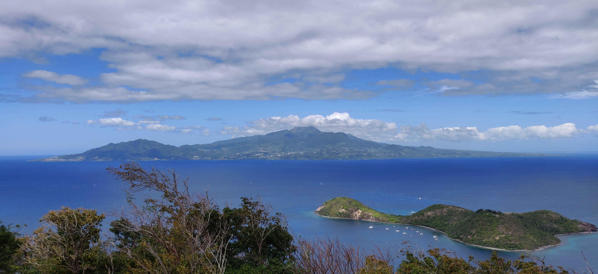

Bonjour je suis
GALLE Swann 😁

J'ai 19 ans et je suis Guadeloupéen et Breton (les deux meilleures origines). Donc comme vous pouvez le comprendre je tourne aussi bien avec le soleil et le rhum, qu'avec les crêpes et le cidre. 😆
Un de mes caractère est ma sociabilité. J'adore découvrir de nouvelles personnes et par conséqunet je ne suis pas timide. On dit meme de moi que je répand de la bonne humeur. Effectivement je m'efforce de toujours faire sourire les autres.
Mes passions
Je suis un passioné de sport en général, surtout pour la pratique, car je n'en regarde jamasi à la télé. J'en ai pratiqué vraiment beaucoup, aux alentour d'une quinzaine.
Parmis ceux que je préfèrent, on peut y mettre l'escalade qui est le premier sport que j'ai pratiqué deux ans d'affilés en club. Egalement le volley-ball, le basket ou encore le foot.
Une autre passion que j'ai, n'est non pas la cuisine, mais la nourriture. Je mange beaucoup, pas forcément des plats sophistiqués, juste en grande quantité en général.
Enfin, je suis en train de m'entrainer afin de me lancer sérieusement dans le poker. C'est grâce à mon sousin que j'ai découvert ce jeu et cette passion. Il y a beaucoup joué étant jeune, au point de payer ses études avec cette pratique. Pour démarrer je fais des petits tournois en ligne avec des centimes sur une application.
Le site sur lequel je joue Winamax.🃏
Mes associations
Je suis actuellement dans deux associations au sein de l'école ESSEC. La première qui est HeForShe, l'association qui promeut l'égalité entre les hommes et les femmes.
Et la seconde qui est SARI, une association humanitaire dont le but est de venir en aide aux enfants en Inde et au Népal.
La Guadeloupe
Je ne vous l'ai pas caché, effectivement je viens de le Guadeloupe. Et je trouve (surement comme tous les autres enfants) que j'ai eu une des meilleures enfances. La Guadeloupe, un coin de paradis. Mais je ne compte pas y retourner vivre. L'avoir connu très longtemps m'a suffit, et qui plus est, la Guadeloupe est petite.
C'est pour cela que je pense qu'y faire son enfance est bien et partir vers la fin de l'adolescence (soit le début de l'âge adulte) est super et permet de ne pas s'ennuyer.
Grâce à tous ça, j'ai vécu dans un environnement tropical et très ouvert d'esprit qui m'a plu et m'a appris plein de choses. Donc si je dois faire des cocktais pour les copains ou les faire rire avec un accent auquel ils ne sont pas habitués, alors c'est avec plaisir que je le fais. 🍹
Voici quelques images de chez moi.
